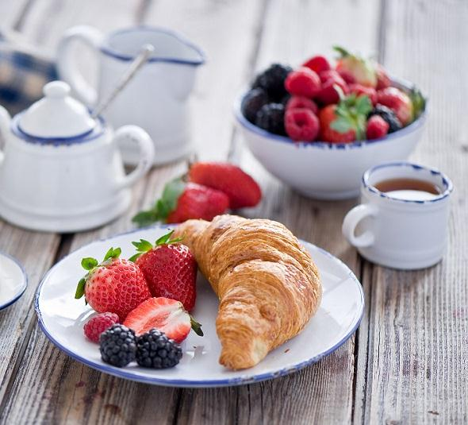
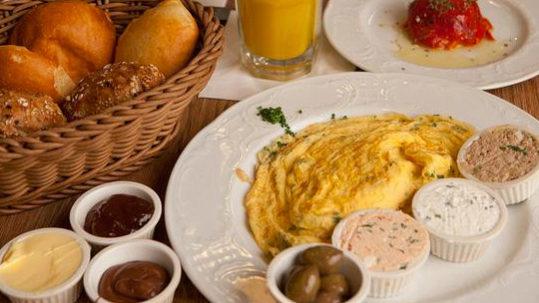
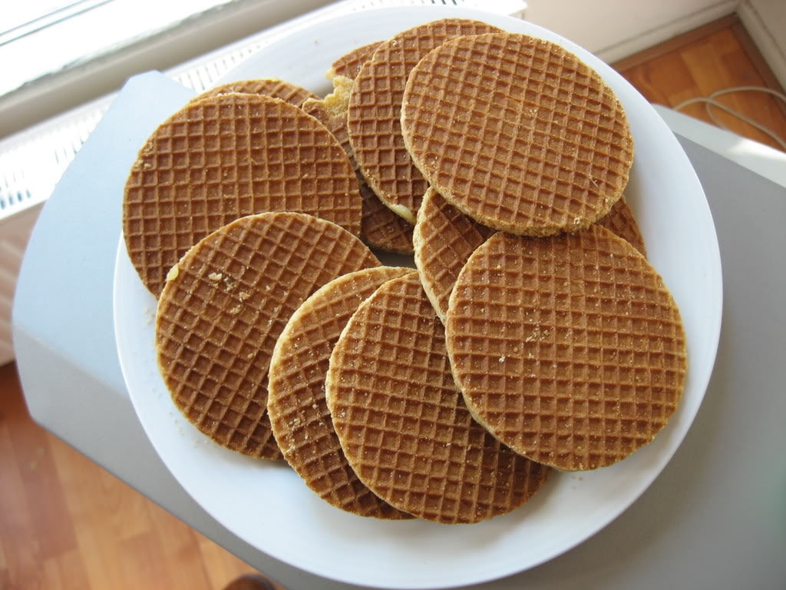

ITALIA
La classica colazione Italiana è costituita da bevande calde come il caffè, tè o cappuccino. Al caffè, spesso si accompagna un cornetto, ne esistono diverse varianti: da quello vuoto a quello ripieno, dalla cioccolata alla marmellata.
ISRAELE

La colazione Israeliana, originariamente consumata solo presso i kibbutz, è divenuta popolare grazie all’ausilio di prodotti feschi. Si tratta di pane fresco, una varietà di formaggi a pasta molle e stagionati, succo di frutta, olive, marmellata e burro.
OLANDA
I pancakes alla mela della colazione Olandese sono una perfetta combinazione di dolce, aspro e salato, serviti solitamente con uno sciroppo scuro di nome stroop